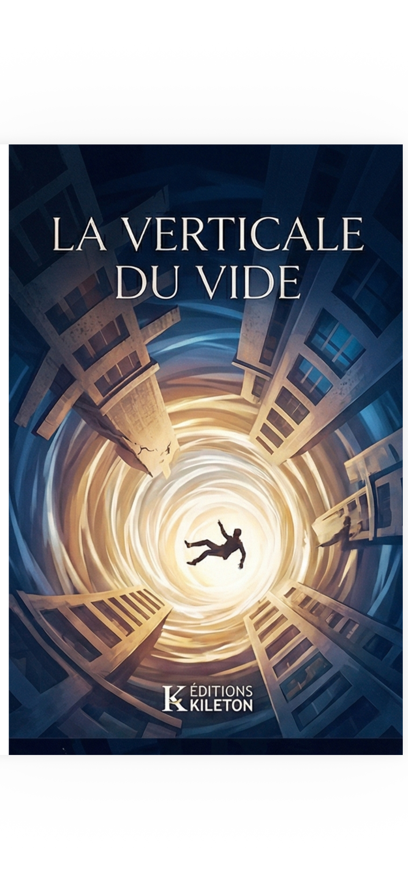

Roman
La Verticale du Vide
« Entre la chute et le chant, il y a nous. Libres de choisir. »
Le Roman
Thomas Vane a quarante-cinq ans, douze tours à son actif et un nom gravé dans le bronze sur trois continents. Architecte le plus célèbre de sa génération, il inaugure à Manhattan son chef-d'œuvre absolu : la Tour Vane, quatre-vingt-huit étages de verre et d'acier couronnés par une passerelle vertigineuse — la Skybridge — suspendue à cent mètres au-dessus du vide.
Mais le soir de l'inauguration, le verre se brise. La Skybridge s'effondre. Et le cœur de Thomas cesse de battre.
Ce qui aurait dû être la fin n'est qu'un commencement. Car Thomas franchit le Voile — cette membrane invisible entre le monde des vivants et l'au-delà — et découvre une guerre qui dure depuis l'aube de la création. D'un côté, la Source, fréquence primordiale dont émane toute lumière. De l'autre, l'Architecte Déchu, un ange tombé qui a jadis bâti les galaxies avant de sombrer dans le froid de son propre orgueil.
Thomas n'est pas un simple témoin. Il est l'enjeu. Une porte vivante entre les mondes, que chaque camp veut ouvrir dans sa direction. Et au fond de son âme, un passager clandestin attend depuis toujours le moment de se révéler.
Entre architecture vertigineuse et métaphysique brûlante, La Verticale du Vide est un roman sur la chute et la rédemption, le libre arbitre et la foi — une plongée dans cette verticale de néant où chacun doit choisir : le silence ou le chant.
Lire un extrait
Plongez dans les premières pages du roman. Téléchargez gratuitement le Prologue et le Chapitre 1.
Télécharger l'extrait gratuit (Prologue & Chapitre 1)Se procurer le livre
Acheter sur AmazonDisponible prochainement
Également disponible en librairie — contactez-nous